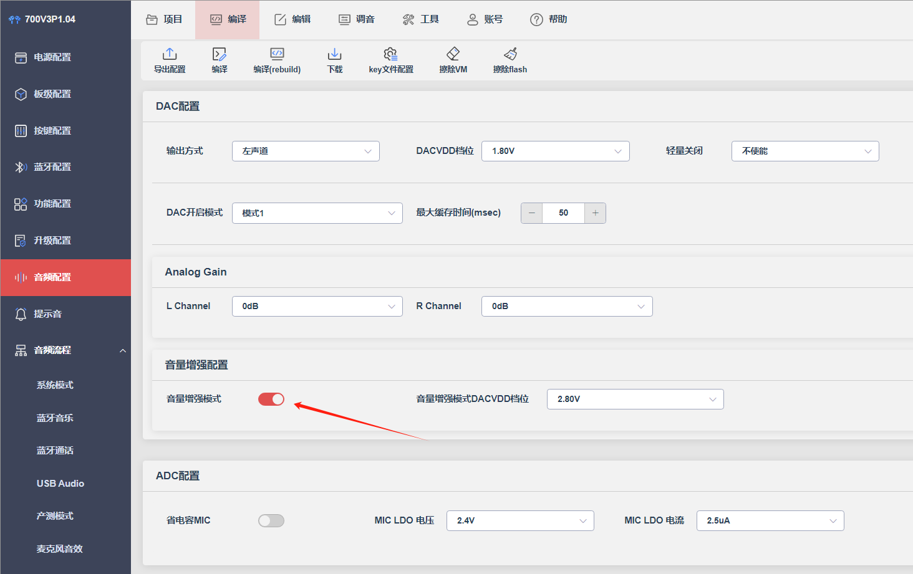
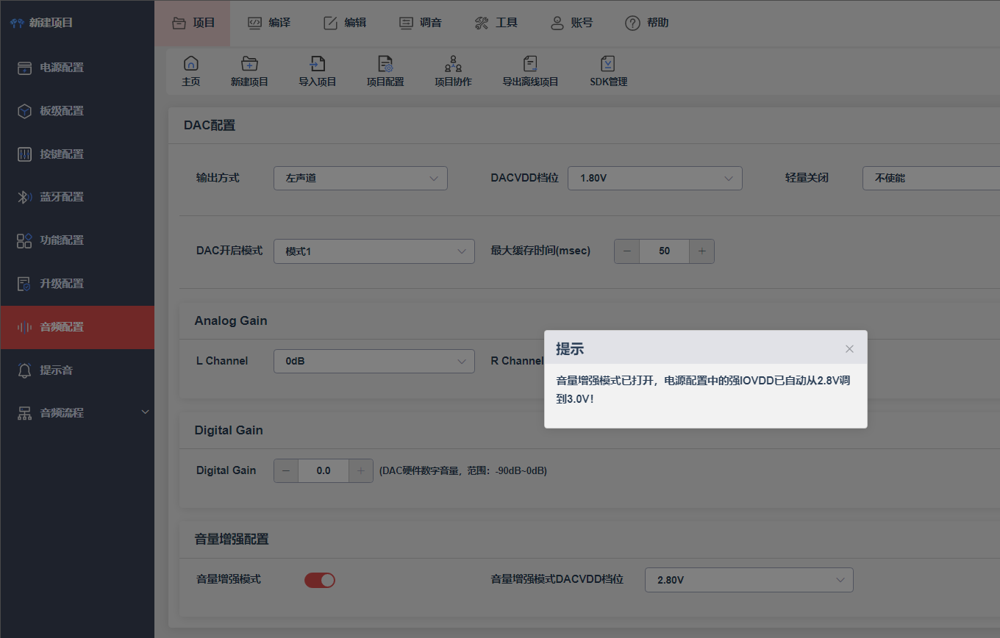
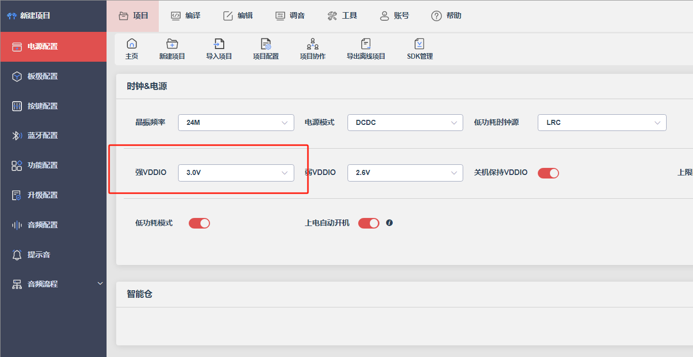
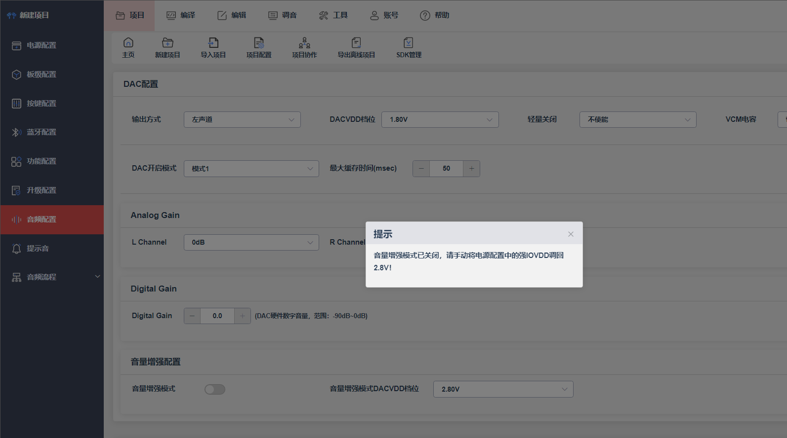

12.1. DAC配置
Note
本配置为通用配置，不同平台，参数会有所差异，只需关注当前使用平台下有的参数即可
12.1.1. 音频配置
12.1.1.1. 声道配置
设置DAC的输出信号的声道
单左声道：
单右声道
双声道
单声道LP-RP
12.1.1.2. 输出方式
设置DAC的输出方式。常用配置有单端隔直输出、差分输出、VCMO模式输出，需要根据芯片规格和硬件设计进行配置
参数组1（e.g.706N、）
单端隔直输出
差分输出
VCMO直推输出
参数组2（e.g.701N）
Note
如果输出方式有输出挡位选择的时候，需要注意供电电源的挡位适配，否则会因为供电不足，接近满幅度输出的时候出现削顶
比如：701N选择高压二档单端，需要保证IOVDD大于3.3V（选择3.4V挡位）
12.1.1.3. 轻量关闭
设置是否使能DAC轻量关闭。通过使能轻量关闭可保持DAC电源常开来避免开关DAC出现PO声
12.1.1.4. 性能模式
设置DAC的性能模式。用于选择DAC配置是标准性能模式或是低功耗模式
12.1.1.5. VCM电容
设置VCM外部是否连接电容。需要根据芯片是否有引出VCM脚以及实际硬件电路是否带有电容进行配置
12.1.1.6. DAC开启模式
设置DAC开启模式，该配置用来适配不同负载，开关DAC可能会有不同的Pop-Up Noise（即开关DAC的po声）。如果默认开启模式po声较大，可以尝试更换开启模式对比
Note
更换DAC开启模式选项，需要擦除flash vm配置，重新校准DAC偏置
12.1.1.7. 缓冲长度(ms)
设置DAC缓冲长度。用于配置DAC数据缓存大小
12.1.1.8. Analog Gain
设置DAC模拟增益档位
12.1.1.9. 音量增强配置
通过以下配置可以增大DAC的输出功率，达到音量增强的效果
（1）音频配置打开音量增强模式
（2）打开后电源配置的强IOVDD会自动从2.8V调到3.0V


Note
关闭音量增强模式后，需要手动将电源配置中的强IOVDD调回2.8V
